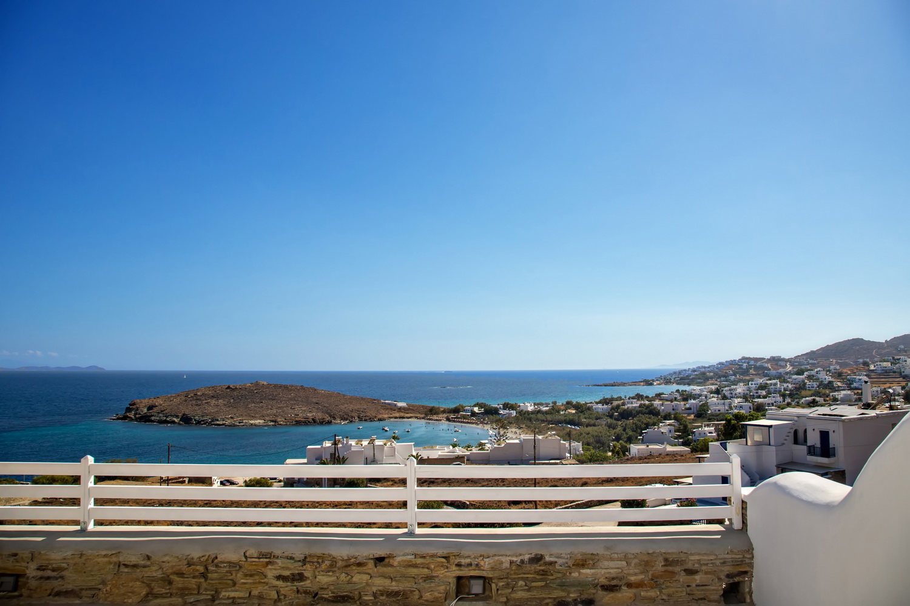
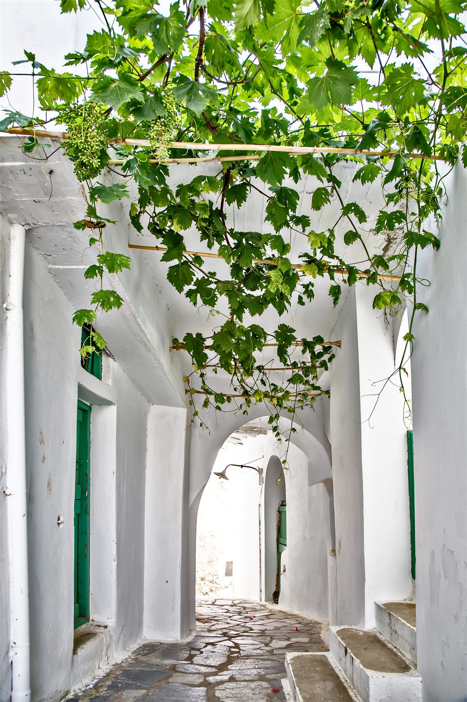

Tinos, from Agios Ioannis
A quiet bay on the island's south-east coast — with the rest of Tinos within easy reach.

Agios Ioannis
A small bay, a sandy beach
Agios Ioannis is a small seaside village on the south-east coast of Tinos — a sheltered, sandy bay with shallow water, a handful of houses and a beach taverna for lunch.
It stays calm even in high summer, and it's about the closest the island has to a classic family beach: easy swimming, soft sand, quiet evenings.

Our location
Close to the beach, quiet on the hill
Horizon Villas sits on the hillside just above the village — about five minutes on foot from the sand. The raised position gives the houses and the pool open views over the bay and the Aegean, with the calm of being set back from the water.
Close enough to walk down for a swim before breakfast; far enough that the nights are quiet.

Tinos, the quiet side of the Cyclades
Among the islands of the Cyclades, Tinos has kept its character. It is best known for the church of Panagia Evangelistria in Tinos Town, one of the most important pilgrimage sites in Greece — but spend a few days here and it's the villages that stay with you: more than forty of them across the hills, with marble fountains, carved fanlights and the island's dovecotes.
In recent years Tinos has become one of Greece's most talked-about food destinations, with serious tavernas across the island — while staying far quieter than its neighbours Mykonos and Santorini.
Within easy reach
The island, around fifteen minutes away
Tinos Town
The island's port and capital — the church of Panagia, museums, shops and a long waterfront of restaurants, about fifteen minutes by car.
The villages above the bay
Triantaros, Dyo Choria and Arnados on the slopes just above us — balcony views over the Aegean and good tavernas, around ten minutes' drive.
Volax
A village set among giant granite boulders, unlike anywhere else in the Cyclades.
Pyrgos & the marble villages
The home of Tinian marble carving, with its museums and plane-shaded square — an easy half-day through the island's north.
Kardiani & Ysternia
Two of the island's loveliest villages, built into the green western slopes high above the sea.
Mykonos & Delos
Regular ferries from Tinos Town make Mykonos and the ancient island of Delos a comfortable day trip.
Plan your stay on Tinos
Check rates and availability across all six houses — book direct for the best price.
Or message us on WhatsApp — we reply in minutes.